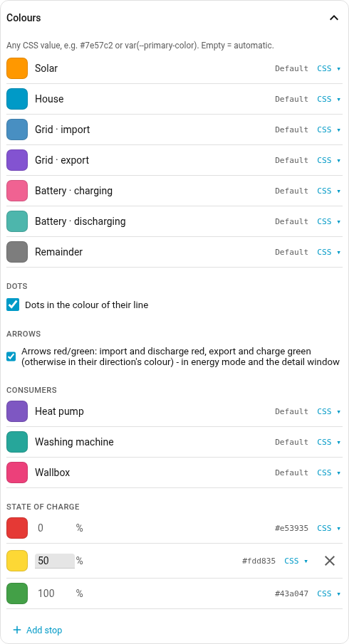
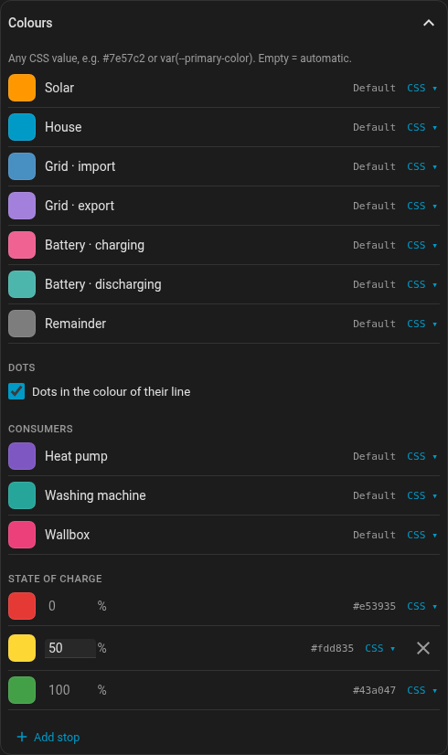

Colours and look
Every colour the card has sits under Colours in the editor: the seven nodes,
the extra values (one row per value set up), one row per consumer, and the stops
of the state-of-charge gradient. Each row shows the colour the card is painting
on the left and the configured value on the right — Default while none is set.

Clicking the swatch opens the picker: a saturation and brightness field over a hue strip, with the value below it as hex or, switched over, as sliders for RGB or HSL. Next to those sit the colours this card already uses — one click, and two air conditioners get the same blue rather than two similar ones.
CSS ▾ folds out a text field. That is the way in for anything that is not a
hex value: var(--primary-color) stays bound to the theme instead of being
frozen to a fixed value. That is why the field stayed — a picker on its own can
only do #rrggbb.
A consumer’s colour therefore lives here, not on the consumer’s own card. Two places for one setting would be one too many.
The ends of the gradient are pinned: at 0% and 100% the colour can be changed, the percentage cannot, and neither can be removed — the card refuses a gradient that does not run the whole scale. Stops in between can be moved, added and removed, as long as two remain.
Defaults come from Home Assistant’s energy theme variables, so the card matches the energy dashboard without configuration. To colour by good and bad instead:
colors:
grid_export: "#43a047" # exporting is good
grid_import: "#e53935" # importing is not
battery_charge: "#43a047"
battery_discharge: "#e53935"The arrows at grid and battery are red and green on their own: red for import
and discharge, green for export and charge, in the theme’s colours
(--error-color, --success-color). To have them in their direction’s colour
instead, untick Colours → Arrows, in YAML colors.arrows: direction.
Transparent background (card-mod)
To let a dashboard wallpaper show through, the card can be made transparent with card-mod (card version 0.8.2 or later):
card_mod:
style: |
ha-card {
--ha-card-background: transparent;
background: none;
box-shadow: none;
border: none;
}The first line is the one that matters here: the four nodes are filled with the
card’s background colour, and background: none on its own leaves them
standing as solid discs. This works with appearance: auto only - set to
light or dark, the card paints its own background, and card-mod does not
reach it.